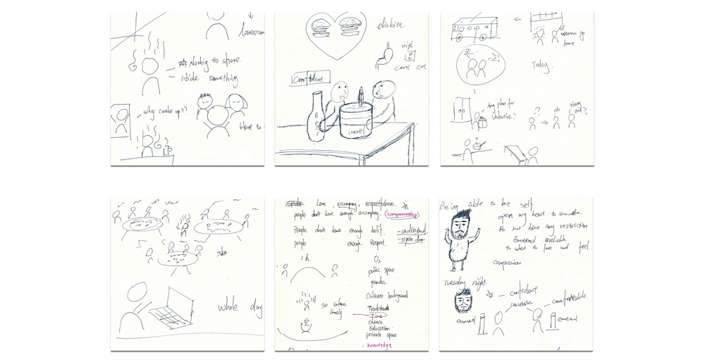
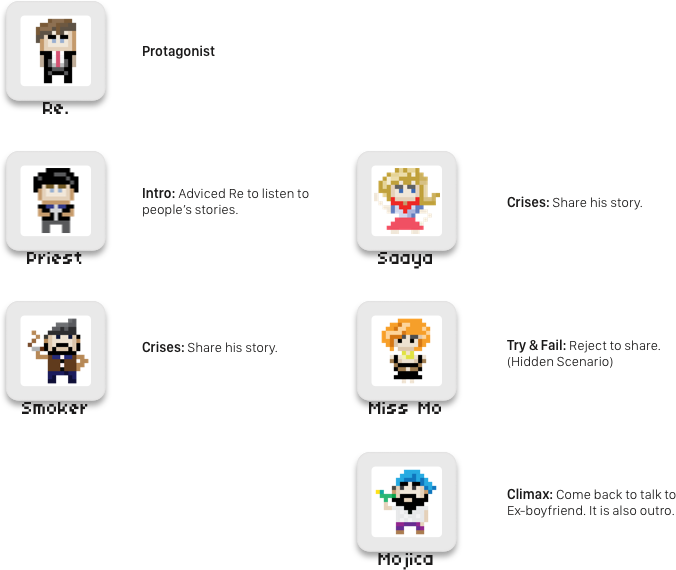
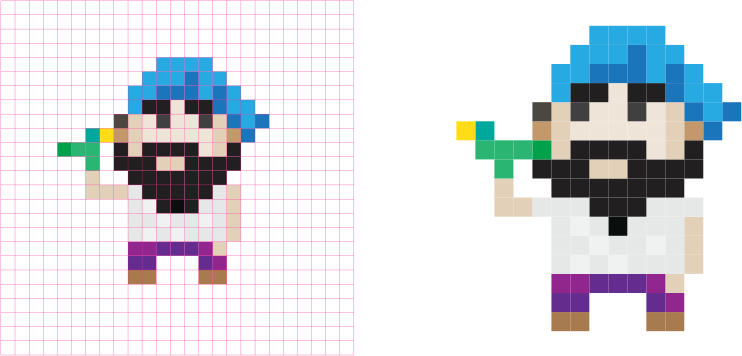

Companionship
An interactive story-telling game on Sifteo Cubes.
Project Advisor: Christina Wodtke

For people who have suffered from a break up, Companionship is an interactive story-telling game that persuades people to open their heart and listen to other people's stories. Unlike ordinary story books, the game encourages players to move on.
“City life is millions of people being lonesome together.”
-Thoreau (Philosopher)
Read More
“Companionship” is an interactive story project. The assignment asked students to find a scarce resource and develop a story to encourage readers to share the resource; the resource chosen by me was Companionship. With the help of the Sifteo cubes, readers could engage in this Companionship with 5 Non-player characters - the action of combining cubes enabled players to better engage with the story.

img of rendered finalized design
Why companionship?
I chose the topic of companionship because I had found feeling low and I needed help to get out of it. So, I interviewed 3 friends of different ages and cultural backgrounds. I asked them to tell me a story of being helpless and upset and sketched notes. Interestingly, I found a pattern; that all of them got rid of their sorrow by talking to others. Both sharing their stories and listening others' stories helped them move on. I found myself greatly enjoying my topic choice, because it also helped me out.
Interview Sketch Note
"I want to be able to be myself, to open my heart. I want to be emotional avaliable to what to love and feel."
-Jose (Interviewee)
“I encountered culture shock during travling in India. When I came back, I felt no one understood me. It got better after I talked with my friends and they understood.”
-Joyna (Interviewee)
Insights:
People tend to talk to others to get rid of sorrow and loneliness because sharing makes them understand others and feel like they are not alone.
However, some people do not share and listen to others. This is the story that try to help them find the way to get rid of their sorrow and loneliness.
How to share companionship?
We could focus on creating characters in different locations on a map. This provided players discovery by letting users walk around and talk to different characters.
Prototype:
A rough model to play around with for testing the ideas.
What is the senario?

Story Arc:
Plan out the senario and figure out what I can do to create an engaging story.

Character Design:
I drew these characters in a pixelated style with Illustrator and gave them personalities to fit in the story.
